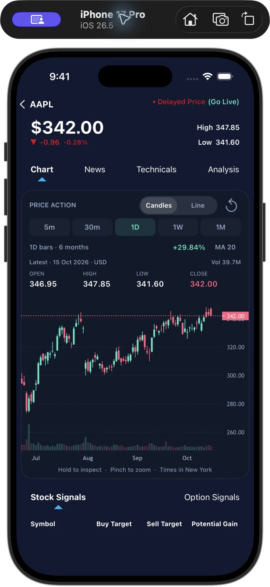
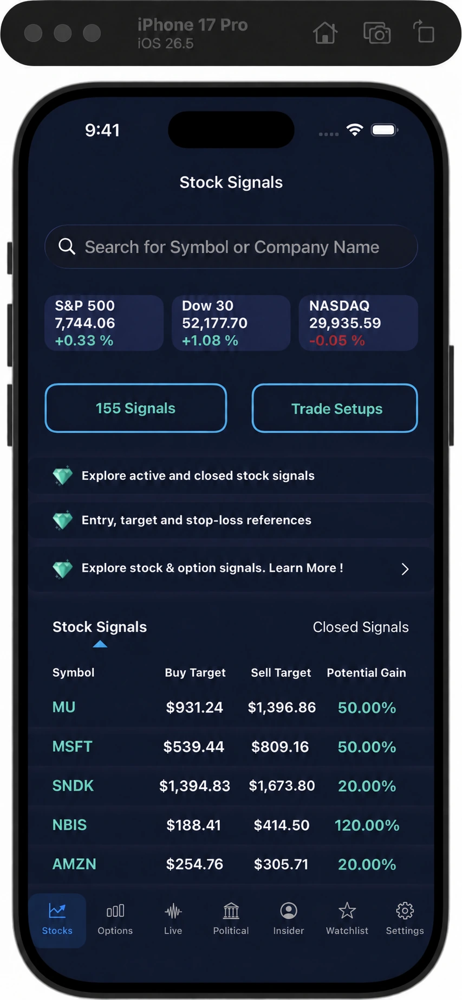
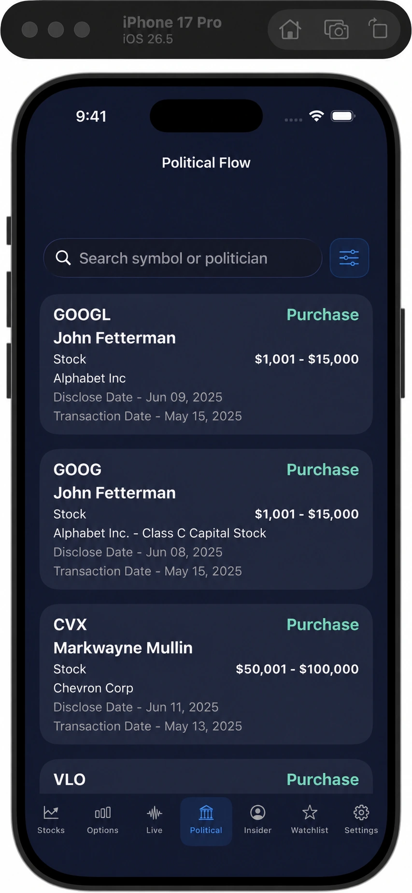
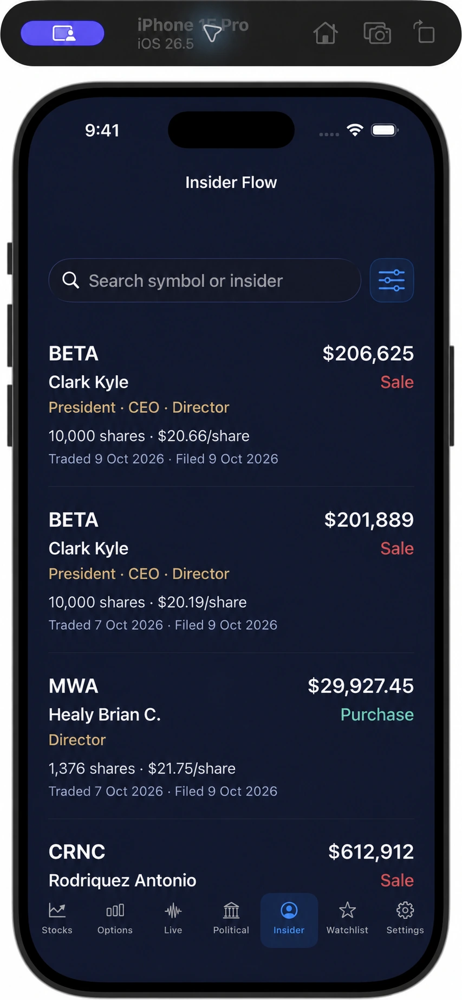

Stock signals
Start with a defined setup. Review entry references, targets, and stop-loss levels, then explore active and closed signals.
An idea. A plan. A place to start.Turn market noise into a focused starting point. Stock & option signals, unusual options activity, and the trades worth researching. All in one app.
Made for iPhone & iPad · Free download. In-app purchases.

Actual app screen. Historical data shown.
Stock signals
Option signals
Unusual flow
Political trades
Insider activity
ONE APP. MORE ANGLES.
A trade idea is just the beginning. Bring signals, market activity, and research together before you decide your next move.
Start with a defined setup. Review entry references, targets, and stop-loss levels, then explore active and closed signals.
An idea. A plan. A place to start.See the contract behind the idea: call or put, strike, expiry, premium, and reference levels, together in one view.
The details that shape the trade.Explore elevated options activity. Narrow your view by estimated premium, volume, open interest, and time to expiry.
Find activity worth a closer look.Explore publicly disclosed Congress and Senate transactions. Filter by politician, trade type, amount, and dates.
Public disclosures. More context.Research reported trades by corporate officers, directors, and other insiders. Go from a transaction to its SEC filing.
See who's behind the activity.Go deeper with candlestick and line charts, volume, MA 20, company news, technicals, and analyst recommendations.
A fuller picture of every ticker.Feature access varies by plan. Market data and public disclosures may be delayed.
A LOOK INSIDE THE APP
Explore trade setups, then see what politicians have publicly disclosed. Two different views. A more connected research routine.
Review buy and sell targets, compare active and closed signals, and search by ticker or company.

Illustrative setup using 15 Oct 2026 closing prices. Targets and gain percentages are hypothetical, not app signals or forecasts. Prices & calculations ↗
See the politician, reported transaction range, and both trade and disclosure dates in one view.

Edited app preview with sample disclosures. Disclosure dates can be later than transaction dates.

LOOK BEYOND THE TICKER
Who traded? What was reported? When did it happen? Insider Flow puts the details within reach, so you can ask better questions.
See the insider's name and reported role, from CEOs and CFOs to directors and significant owners.
Distinguish purchases and sales from exercises, awards, gifts, and other transaction types.
Compare transaction and filing dates, then open the SEC filing for the details behind a record.
A MORE INTENTIONAL ROUTINE
One place to discover ideas.
More ways to make sense of them.
Explore stock and option signals, unusual activity, or curated market lists.
Compare price action, news, analyst views, and disclosed trading activity.
Review the details, consider the risk, and decide what fits your strategy.
BEFORE YOUR FIRST LOOK
Need a hand with the app?
Talk to our support team
Stock Signals brings stock and option trade ideas, unusual options activity, political disclosures, corporate insider transactions, and stock research into one app. Use it to discover ideas and add context to your own research.
Yes. The app is free to download, with in-app purchases for premium access. Some features and feeds require Pro. Check the available plans and current prices in the app before purchasing.
No. Stock Signals is a research and information app. It does not connect to your brokerage to execute trades or manage your investments. You decide whether to act and place any orders through your own broker.
These feeds show reported public disclosures. Transaction dates and filing or disclosure dates can differ, so recently reported activity may describe an older trade. Review both dates and the underlying filing when researching a record. Free Insider Flow previews use labeled demo data.
Yes, the app supports iPhone and iPad. Follow the App Store link for the current device and operating-system requirements. On the App Store, find it under “Autopilot AI Stocks Alerts.”
No. Signals, targets, analyst views, and activity indicators are research inputs. Trading stocks and options involves risk, including loss of capital. Historical results and displayed potential gains do not guarantee future returns.
YOUR RESEARCH. A LITTLE MORE CONNECTED.
Put the bigger market picture in your pocket.
Download on theApp StoreFree download · In-app purchases · iPhone & iPad